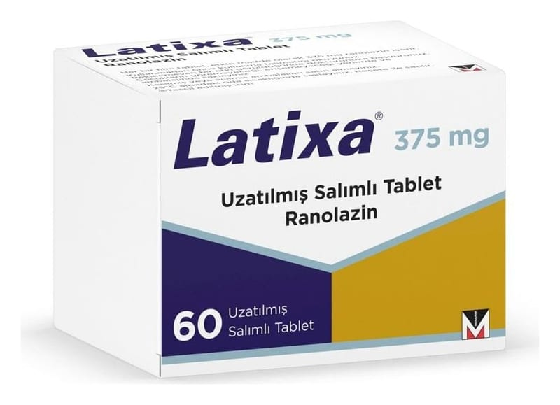

Latixa 375 mg Uzatılmış Salımlı Tablet, Tablet, 60 Adet

Ne için kullanılır
KT · Bölüm 1LATİXA, sıklıkla egzersiz ya da çok aktivite ile vücudun üst yarısında karnın üst kısmı ila boyun arasında kalan bölgede herhangi bir yerde rahatsızlık ya da göğüs ağrısı şeklinde kendini gösteren anjina pektoris (kalbi besleyen damarların daralması/tıkanması ile ortaya çıkan göğüs ağrısı) te davisinde diğer ilaçlarla birlikte kullanılan bir ilaçtır.
İyi hissetmiyor veya daha kötü hissediyorsanız doktorunuzla konuşmalısınız.
LATİXA 60 adet uzatılmış salımlı tablet halinde kullanıma sunulmuştur.